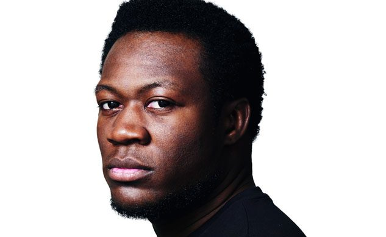

Dubstep Pioneer Benga Makes His Return With “Make Moves”


While Benga announced his retirement from dance music back in 2014, last year he went public on his struggles with mental illness, a gutsy move that arguably inspired similar honesty from artists as diverse as Blasterjaxx, Nicky Romero and deadmau5 before the year was out. After Benga revealed just prior to Christmas that he would be returning to DJing in 2016, he’s also just confirmed he’s finally got some new music on the way, too.
“It’s been two years and I have grown a lot, and I now know what’s important: music. I’m back and I think my sound is the most ‘me’ it’s been since Diary of an Afro Warrior and I’m super excited to play it and reconnect with all of the people who have supported me. Let’s have a good year!”
Listen to Benga’s rather techno-infuenced “Make Moves” below, which he’s releasing as part of his Future Funk EP on February 26 via his own Benga Beats label.